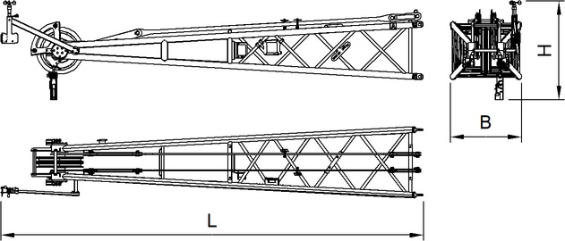

ID_437b9d0f21864dfc9353e87e5c6c4331-f14b6ed93b32402aa814a9604a815897-de-DE.html
true
Nadelausleger-Kopf 1008.20

Fig. 154: Abmessungen Nadelausleger-Kopf 1008.20
Fig. 154: Abmessungen Nadelausleger-Kopf 1008.20
Benennung | Wert | |
|---|---|---|
Systemlänge |
5500 mm 18.04 ft | |
Systembreite |
1000 mm 3.28 ft | |
Systemhöhe |
800 mm 2.62 ft | |
L | Länge |
6500 mm 21.33 ft |
B | Breite |
1090 mm 3.58 ft |
H | Höhe |
1020 mm 3.35 ft |
Gewicht (inkl. Haltestangen) |
920 kg 2,028 lb | |
Technische Daten Nadelausleger-Kopf 1008.20